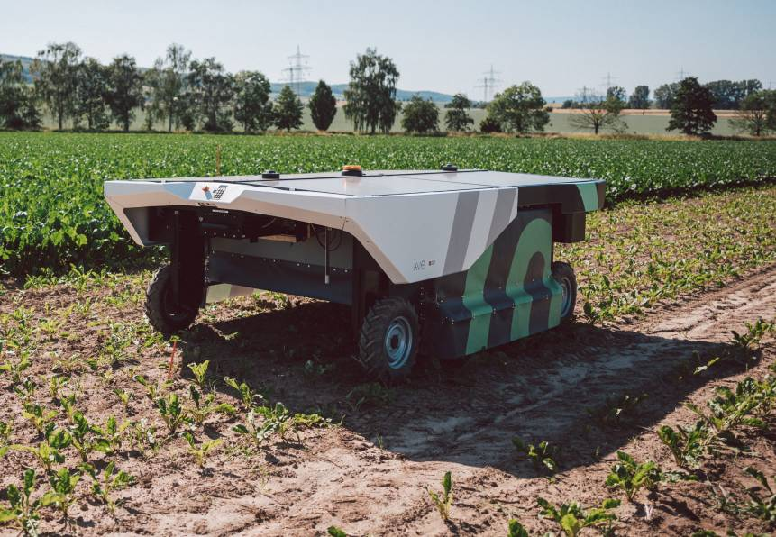
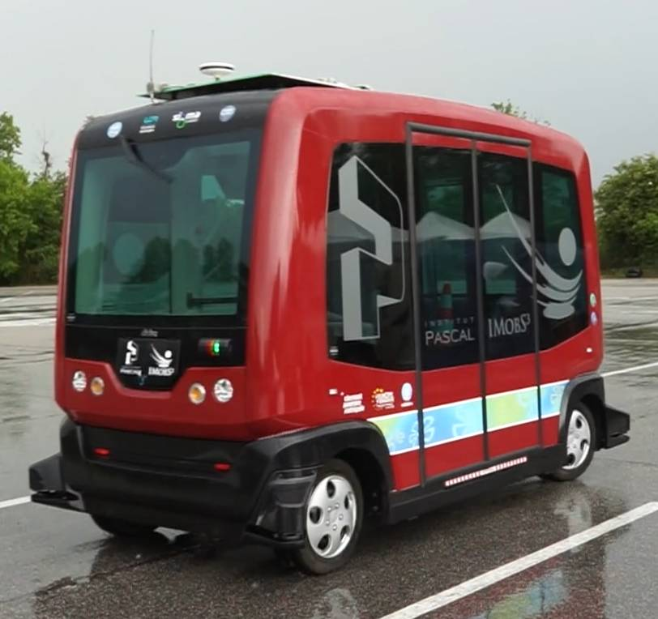
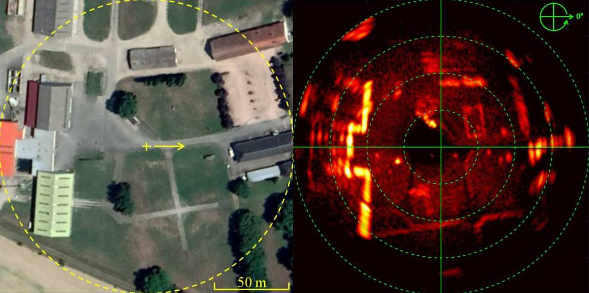

AVO, un robot autonome qui fournit un sprayage intelligent ultra-écologique
ARA, un sprayeur ultra-haute précision
Ma mission consistait à spécifier et implémenter le module de localisation de ces deux machines.
Le défi était de mettre au point un algorithme de fusion de capteurs répondant aux caractéristiques suivantes :
accepter des capteurs hétérogènes (GPS et odométrie visuelle prise depuis plusieurs endroits sur la machine)
accepter un échantillonnage irrégulier (fréquences différentes selon les capteurs et délais arbitraires de réception)
traiter les mesures manquantes ou erronées
s’exécuter en embarqué sur la machine, en utilisant le moins de CPU possible
fournir une prédiction temps réel (prédire la trajectoire future d’une plante détectée dans le passé)
Non seulement mon travail à permis de répondre à toutes ces contraintes, mais il l’a surtout été d’une manière robuste et fiable : aucun bug n’a été découvert sur ce module logiciel pendant ma dernière année chez Ecorobotix.
Robot autonome AVO (source)Sprayeur ultra-haute précision ARA (source)
Tornado (2019)
J’ai contribué au projet Tornado pour l’équipe PerSyst à Institut Pascal.
Ma mission consistait à enrichir la navette autonome EZ10 pour démontrer des fonctionnalités innovantes en milieu urbain :
positionnement de robot par odométrie visuelle
contrôle de trajectoire pour une navigation précise
communication entre les véhicules et l’infrastructure
interaction intelligente avec les autres usagers (piétons, cyclistes, automobilistes)
système de gestion de flotte de véhicules hétérogènes
Basée sur le framework robotique développé par l’équipe en C++ sous ROS, j’ai développé une interface utilisateur pour répondre aux besoins de ce démonstrateur.
Navette autonome EZ10
Baudet-Rob (2018-2019)
Aroco est une plateforme robotique autonome tout terrain développée par l’unité de recherche TSCF à l’IRSTEA (maintenant INRAE).
Je suis intervenu dans la finalisation d’un projet de recherche consistant à localiser le robot en environnement extérieur en utilisant un radar panoramique :
implementation en C++ sous ROS d’algorithmes de recherche innovants (filtre antispeckle, localisation et suivi par corrélation d’images radar)
utilisation et amélioration du framework robotique développé par l’équipe (fusion de capteurs, loi de contrôle, outils de configuration)
développement d’un démonstrateur fonctionnel basé sur le robot Aroco
À la fin de ma mission, le robot était effectivement capable de démontrer :
la localisation en temps réel en utilisant le radar (sans GPS)
l’enregistrement et le suivi de trajectoire avec une répétabilité < 10 cm
en utilisant uniquement le logiciel embarqué autonome sur le robot
Robot autonome Aroco (source)
Vue satellite à gauche / carte radar à droite (images extraites de la publication scientifique)